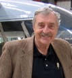

---
From thirty thousand feet at night the glow
of city lights from DC to Boston confounds.
If each light represented only one person,
the numbers would astound. Pack too many
rats in a cage and they fight, kill, and eat
each other. How do people thrive, jammed
together like that? Why don't they go crazy?
Violent? Perhaps that’s why the evening news
in those cities is so messy.
I’d rather look down at flyover country,
the braided North Platte, emerald green
alfalfa circles, towns with grain elevators
along the railroad, a thin road to an airstrip
two miles out of town, ranches miles apart,
a field half light, half dark, a tractor pulling
the dark thread. Cattle gathered around
a stock tank in a windmill’s shadow.
The fruitful work of man in nature.